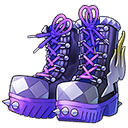

추천 광추
은하철도의 밤
적 수만큼 공격력 · 격파 후 피해
효과 자세히
필드 적 1기당 공격력 +9%, 최대 +45%. 적 약점 격파 시 피해 +30% 1턴.
멈추지 않는 연산
공격력 +12% · 광역 공격 가속
효과 자세히
명중 적 1기당 공격력 +8%, 최대 +40%. 3기 이상 명중 시 속도 +16% 1턴.
천재들의 휴식
공격력 +32% · 처치 후 치피 +48%
효과 자세히
자신이 적을 처치하면 치피 버프 3턴.
동트기 전
치피 +36% · 추가 공격 +48%
효과 자세히
스킬·필살기 피해 +18%. 사용 후 몽신 획득 → 다음 추가 공격 피해 +48%.
영험한 열쇠
전투 스킬 → 에너지 +12pt
효과 자세히
턴당 1회.
추천 유물
뇌전을 울리는 밴드 4 · 창공 전선 그라모스 2
- 머리
 주옵션HP부옵션치명타 확률 · 치명타 피해 · 속도 · 공격력%
주옵션HP부옵션치명타 확률 · 치명타 피해 · 속도 · 공격력% - 손
 주옵션공격력부옵션치명타 확률 · 치명타 피해 · 속도 · 공격력%
주옵션공격력부옵션치명타 확률 · 치명타 피해 · 속도 · 공격력% - 몸통
 주옵션치명타 확률 / 치명타 피해부옵션치명타 확률 (주옵션 제외) · 치명타 피해 (주옵션 제외) · 속도 · 공격력%
주옵션치명타 확률 / 치명타 피해부옵션치명타 확률 (주옵션 제외) · 치명타 피해 (주옵션 제외) · 속도 · 공격력% - 다리

주옵션속도부옵션치명타 확률 · 치명타 피해 · 공격력% - 구체
 주옵션번개 속성 피해부옵션치명타 확률 · 치명타 피해 · 속도 · 공격력%
주옵션번개 속성 피해부옵션치명타 확률 · 치명타 피해 · 속도 · 공격력% - 매듭
 주옵션공격력%부옵션치명타 확률 · 치명타 피해 · 속도
주옵션공격력%부옵션치명타 확률 · 치명타 피해 · 속도
이 조합을 추천하는 이유
밴드 스킬 후 공격력 +20% · 번개 피해 +10%. 그라모스 전투 속도 135/160 → 피해 +12%/+18%.
밤낮의 경계를 나는 매 4 · 바다에 잠긴 루샤카 2
- 머리
 주옵션HP부옵션속도 · 효과 명중 · 방어력
주옵션HP부옵션속도 · 효과 명중 · 방어력 - 손
 주옵션공격력부옵션속도 · 효과 명중 · HP · 방어력
주옵션공격력부옵션속도 · 효과 명중 · HP · 방어력 - 몸통
 주옵션효과 명중부옵션속도 · HP · 방어력
주옵션효과 명중부옵션속도 · HP · 방어력 - 다리
 주옵션속도부옵션효과 명중 · HP · 방어력
주옵션속도부옵션효과 명중 · HP · 방어력 - 구체
 주옵션HP% / 방어력%부옵션속도 · 효과 명중 · HP · 방어력
주옵션HP% / 방어력%부옵션속도 · 효과 명중 · HP · 방어력 - 매듭
 주옵션에너지 회복효율부옵션속도 · 효과 명중 · HP · 방어력
주옵션에너지 회복효율부옵션속도 · 효과 명중 · HP · 방어력
이 조합을 추천하는 이유
매의 필살기 후 행동 게이지 증가, 루샤카의 에너지 회복효율과 영험한 열쇠의 전투 스킬 후 에너지 회복을 사용합니다.
이 정도면 잘 키웠다
선택한 세팅 기준 · —는 확인된 수치 없음
- 속도 전투 중
서벌 자체의 전투 스킬과 필살기 피해를 높입니다.
| 스탯 | 추천 스탯 | 준종결 | 종결 |
|---|---|---|---|
| 공격력 | 2200 | — | — |
| 속도 | 전투 135 또는 160[1]그라모스 발동 조건. | — | — |
| 치명타 확률 | 70% | — | — |
| 치명타 피해 | 140% | — | — |
세팅 기준·출처
공개 가이드에서 이 세팅의 준종결 또는 종결 수치를 확인하지 못했습니다.
스탯 조건과 각주
- 속도 · 추천 스탯 그라모스 발동 조건. ↑
- 더 헤르타 편성
광역 필살기를 빠르게 돌려 더 헤르타의 해독과 에너지를 보조합니다.
| 스탯 | 추천 스탯 | 준종결 | 종결 |
|---|---|---|---|
| 속도 | 166.7+[1]원본 시트의 매 4세트 기준. Prydwen의 매 + 영험한 열쇠 실전 권장은 160+. | — | — |
| 효과 명중 | 108.4%[2]원본 시트의 더 헤르타 파티용 수치. | — | — |
| 에너지 회복효율 | 124.44%+[3]기본 100%에 5성 +15 매듭의 에너지 회복효율 19.44%p와 「바다에 잠긴 루샤카」 2세트의 5%p를 더한 총량입니다. | — | — |
세팅 기준·출처
공개 가이드에서 이 세팅의 준종결 또는 종결 수치를 확인하지 못했습니다.
성혼과 추천 돌파
2돌 특성 에너지 · 4돌 필살기 감전 · 6돌 감전 적 추가 피해.
1일반 공격 → 인접 적 1기 추가 타격
일반 공격 피해 60% 번개 피해.
2특성 추가 피해마다 에너지 +4pt추천
앵콜!
3전투 스킬 +2 · 일반 공격 +1
스킬·일반 공격 레벨 상한 각각 15·10.
4필살기로 감전 부여추천
감전되지 않은 적에게 기본 확률 100%로 스킬과 같은 감전.
5필살기·특성 +2
필살기·특성 레벨 상한 각각 15.
6감전된 적에게 본인 피해 +30%추천
천공을 가르는 노래!
추천 파티


기본 운영과 행적
감전을 걸고 필살기로 연장
전투 스킬로 감전 부여 → 필살기로 감전 유지 → 감전 적 공격 시 특성 추가 피해.
- 더 헤르타와 함께라면 회복효율 매듭·열쇠·매로 광역 공격 횟수를 늘려 해독 지원.
행적 육성 순서
전투 스킬 → 특성 → 필살기 → 일반 공격
- 해독 지원형은 주요 행적과 회전 장비 우선.
기준과 출처 · 2026-11-27
4.7 데이터 · Prydwen 장비 참고 · 자료실 편성 예시